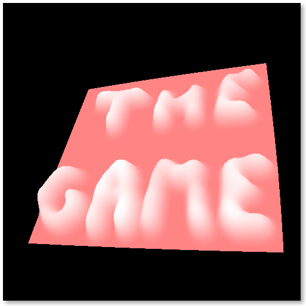

La cartographie de demain !
AutoMap est un logiciel de cartographie 3D intuitif, puissant et multiplateforme ! Grâce à AutoMap vous pourrez très aisément convertir vos relevés topologiques en une magnifique représentation tridimensionnelle.
AutoMap a été codé en Objective Caml et utilise les bibliothèques glMLite, LablGTK et OcamlSDL pour fonctionner.
AutoMap a été réalisé dans le cadre du projet du 1er semestre de deuxième année à l'EPITA.
Mercredi 26 Octobre 2011 à 21:51,
Mercredi 12 Octobre 2011 à 2:16,
Premier rendu OpenGL !
Après avoir bataillé pendant deux jours à trouver la documentation de référence de lablGL, nous avons pu travailler sur les bases de tutoriaux en C pour comprendre la logique assez étrange au premier abord, de OpenGL.
Pendant ce temps, la détection de contours avance un peu, nous sommes en mesure de détecter les contours d'une image sans aucun bruit (transitions brutales) par un balayage sur X et un deuxième sur Y.
Lundi 10 Octobre 2011 à 16:34,
{kind=link}
{kind=link}
{kind=link}
{kind=link}
{kind=link}
{kind=link}